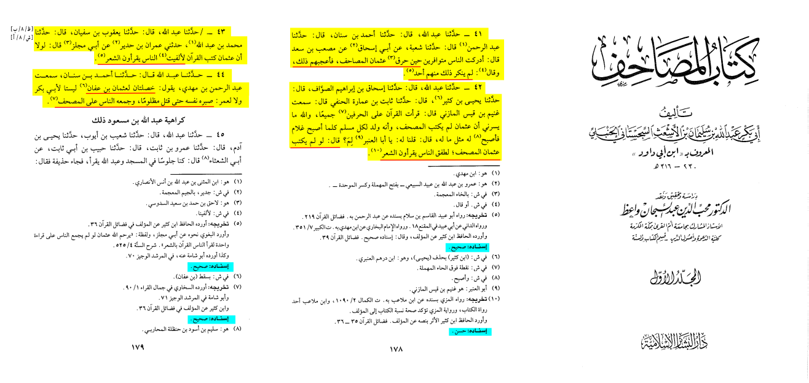

How did Uthman carry out the compilation?
Firstly,
Uthman made it so 2 witnesses were demanded for every portion of the Quran presented.
Secondly,
Zaid b. Thabit was chosen to head the Committee, as he was the closest to the prophet and was the best Quran memoriser.
Thirdly,
Whenever a manuscript was witnessed for by the 2 men, the Committee then checked it against other manuscripts, and then against their memories and memories of the well-known Huffaz of the Quran. As well as among the generality of the other companions, those readings were officially transcribed into the Master Uthmanic Codex.
Lastly,
Then, after acceptance and agreement to prevent corruption, the other peoples Quran were collected by authorities and burnt. This meant that anyone who wanted to copy the Quran, they would be able to do so, directly from the Master Uthmanic Codex.
Extra information,
Uthman used the copy of the Qur’an that was with Hafsah, to compare to what he had, to authenticate the Uthmanic master codex even further. Throughout the above events, he also asked Aisha to send him the parchments which were dictated by the Prophet (and which she kept in her house), for another comparison. Once satisfied with all comparisons and checks, the compilation was complete. After the compilation, none of the companions complained about any issues such as additions, omissions, etc.
Conclusion,
The Quran was perfectly preserved.
https://sunnah.com/bukhari:4987

Narration 41
Musab bin sad said: "I saw the people around when Uthman burned the masahif and they liked that and/or said not one person objected"
Narration 42
Thabit bin amara al hanfi said: "I heard Gunaym bin qays al mazi said: 'I recited the Quran on two Harfs (2 different way) then he says at the end "If Uthman did not standarise the Quran, the people wouldve been reciting poetry"
Narration 43
Abi Maljiz said: "Had Uthman not written the Mushaf, the people wouldve been reciting poetry"
Narration 44
Ahmad bin sanan narrates: "I heard Abdulrahman bin Mahdi saying: 'Two (great) characteristics of Uthman bin Affan that are neither for Abu Bakr nor Omar, His patience until he was killed unjustly, and his standarisation of the Mushaf"